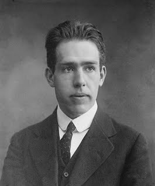

Answer in the correct input field then hit the button

Never has a man influenced physics so profoundly as Niels Bohr in the early 1900's
Going back to this time period, little was known about atomic structure; Bohr set out
to end the obscurity of physics. However, things didn't come easy for Bohr. He had to
give up most of his life for physics and reaearch of many hypothesis. Butm this is why
you and I have even heard of the quantum theory and atomic structures. Bohr came
up with his quantum theory while studying at Cambridge. Bohr was a skeptic and he
never truly believed in Max Planck's old quantum theory. He put forth the idea that,
going from one high-energy orbit to a lower one, an electron could, in fact, be trying
to emit a quantum of discrete energy. Bohr was criticized for this idea, but he didn't
let up. Soon after, Bohr said his famed quote, "If quantum mechanics hasn't shocked
you, you haven't understood it yet."This quote is extremely famous and has gone
down as the motto for quantum physicist around the world. Understadably, Bohr
never won a Nobel prize outside of physics (of which he only won one). Bohr's still
going strong with his theories on atomic structure; he allowed for 100's of scientists
to fully experiment with the cell and its many components. Bohr was largely on the
run from the Nazi's when he came up with this discovery, which is amazing because
around this time, Bohr's home country of Denmark was invaded by Nazi's. Bohr
and Ernest Rutherford are given credit, but it's believed that Rutherford decided to
desert Bohr in the middle ot their work. Rutherford once, quite famously said that
you should never bet against the wonders of science. Niel Bohr's famous career
never really kicked off until he was forty years old. Most other major scientists were
going all over the world with their ideaas by their early twenties. However, in order
to preserve the legacy of Niels Bohr, he has his own institution, whose goal is to
make many more great strides in the field of physics for years. How did Bohr affect
you and me? Without Niels Bohrs' more advenced atomic theory, we might as well
cry over how little we know of the atoms and their compounds. Physics would have
never been such a force in the todays society. However, to this day, research is still
going on to improve and update the atomic theory. Although scientists clearly want
to improve on Bohr's theory, many famous physicists come out publicly and openly
say that bohr's ideas will never be imporved upon, todays society cannot say
goodbye to an opportunity to improved our understanding of the sciences. If Bohr
never had silenced his critics, we would still be following Planck's theories, and
going on incomplete information. Bohr's later life was all occupied when he decided
to go back to Denmark and head the Royal Danish Academy. His main goal was to
tell the world of the greatness of the Danish Sciences and most likely educate
a new crop of scientists for years to come. There is controversy surrounding Bohr's
lie during his stint in the Manhattan Project. Though he claimed to be anti-violence
and a peace-seeket, Bohr engineered on the Manhattan Project. Though he didn't
hurt anyone directly, thousands of people died. Neils Bohr opened many dorrs for
you and I in the physics world, he will go down as one of the greates physicists.
"answer to life the universe and everything" -> Google This
Yay, you just found a hint! It's about the D (or M).